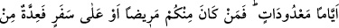

meşakkatli bir ibâdettir. Fakat zor bir iş herkese şâmil kılınınca onu yapmak kolaylaşır
ve herkes onu yapmak için kendinde cesâret bulur.
Âyetteki teşbih, farz kılınan orucun sayısını ve tutulması farz olan günlerini değil, farz
kılındığını açıklamaktadır. Çünkü Adem (a.s.)’a sadece eyyâm-ı bîz denilen (her kamerî
ayın on üç, on dört ve on beşinci günleri), Mûsâ (a.s.)’ın kavmine ise sadece Aşûrâ
günü oruç tutmak farzdı.
Teşbih, benzeyen ile kendisine benzetilen arasında bütün yönlerden eşitlik
gerektirmez. Nitekim duâda: “Allah’ım, İbrâhîm’e ve O’nun âline salât ettiğin gibi
Muhammed (a.s.)’e ve onun âline de salât eyle.” denilir. Aynı şekilde Peygamberimiz
(s.a.), “Siz, açık bir gecede on dördünde olan bir ayı, zorlanmadan ve rahat bir
şekilde gördüğünüz gibi Rabbınızı göreceksiniz.”[82] buyurmuştur. Meselâ bu son
teşbih, görülenleri değil, sadece görüş şekillerini birbirine benzetmek için yapılmıştır.
Umulur ki siz, oruç tutmak sûretiyle mâsiyet ve kötülüklerden sakınırsınız. Çünkü
oruç, mâsiyet işlemenin başlangıcı olan şehvet gücünü kırar. Nitekim Rasûlullah (s.a.),
“Ey gençler, (şebâb) sizden evlenmeye (bâet) gücü yeten hemen evlensin. Çünkü
evlilik gözü harama bakmaktan daha çok engelleyici ve insanı harama yaklaşmaktan
daha fazla koruyucudur. Evlenmeye güç yetiremeyen ise oruç tutsun. Çünkü oruç,
şehveti kırar. (oruçta vicâ etkisi vardır.)”[83] buyurmuştur.
Hadiste geçen “Şebâb” kelimesi, “Şâbb”ın çoğuludur. “Şebâb” ile bulûğa ermiş,
fakat otuz yaşını geçmemiş kimseler kasdedilmiştir. Nevevî de bu görüştedir. “Bâet”,
nikâh ve evlilik demek olup bir eve yerleşmek mânâsından alınmıştır. Çünkü bir kadınla
evlenen kişi, onu bir eve oturtmak durumundadır. “Vicâ”, iki husyenin damarlarını ezip
kendilerini oldukları gibi bırakmak sûretiyle yapılan kısırlaştırma türüdür. Yalnız
burada teşbih söz konusudur. Yâni oruç, iğdiş edilmiş gibi, kişinin cimâ’ arzusunu keser
ve menînin şerrinden onu korur, denilmek istenmiştir. Hadîsteki emir, vâciblik ifâde
eder. Çünkü hadis, “Ey gençler topluluğu!” sözüyle evliliğe en çok arzu ve iştiyak
duyulan zamana hamledilmiştir. Gençlerin ise, fıtratları gereği, cimâa karşı son derece
arzuları bulunduğu açık bir gerçektir. Alimler şöyle demiştir: “Şehvetin
sakinleştirilmesi, gündüzleri oruç tutmak, geceleri namaz kılmak, şehveti uyandıracak
şeylerden uzak durmak ve onu düşünüp hayal etmeyi terketmekle mümkündür.”
Gündüz oruç tutup gece kâim olan, az yiyen kimse, eğer yine kendisinde bir şehvet
hissi duyarsa bile, onda bulunan şehvetin aşırı derecede fazla olması sebebiyledir. Bu
durumda olan birisinin, sürekli olarak ölümü ve ecelin yakın olduğunu düşünmesi,
emelini azaltması, büyük bir dikkatle Allah’a tâata sarılması, kendisini dâimî bir hüzün
ve keder içerisinde hissetmesi ve bu sûretle şehveti nefsinden söküp atması gerekir.